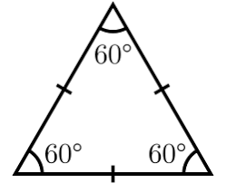

Equilátero
Este tipo de triángulo es un caso muy particular dentro de los tipos de triángulo según la longitud de sus lados.
Cabe señalar que el triángulo equilátero es a su vez acutángulo porque todos sus ángulos internos son agudos. Es decir, todos sus ángulos son menores que 90º.
Otro punto para señalar es que este tipo de triángulo es un polígono regular. Es decir, que tiene sus tres lados y sus tres ángulos internos iguales.
